A collection of small offline games for the pleasure of playing. Pick a game, choose how intense it looks, and make yourself at home.
STMPCK (pronounced “stimpack”) is designed primarily for neurodivergent people but welcomes everyone. I’m looking for beta testers to try it and tell me what they think.
This is an unfinished beta. I expect most of it to work, and you may still encounter bugs or rough edges.
Open the downloaded APK and allow your browser or file manager to install apps from that source when prompted. If you install using ADB over USB, enable Developer options and USB debugging.
To update, open the settings wheel in STMPCK, choose Check for update, and confirm the installation in Android.
Built on Debian for recent Debian and Ubuntu systems on x86-64. In the directory where you downloaded it, run:
chmod +x stmpck-linux-amd64
./stmpck-linux-amd64
To update on Linux, download the latest binary here and replace your old copy.
Explore the games
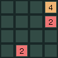
Merge
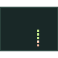
Snake
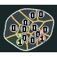
Territory
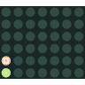
Linear
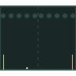
BounceFlow
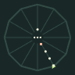
Caliban
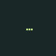
Bloom
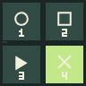
Echo
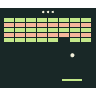
BrickPlanets
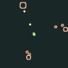
Drift
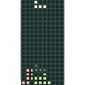
Stack
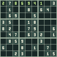
Deduction
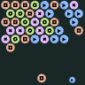
Bubble Volley
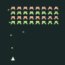
Wave
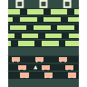
Crossing
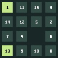
Shift
Tell me how it plays
What did you want to keep playing? What felt hard to see or control? If something broke, tell me what you expected, what happened, and which device and OS version you used.
STMPCK is licensed under Creative Commons Attribution–NonCommercial–ShareAlike 4.0 International. You can share and adapt it for noncommercial use. When sharing it, credit the creator, link to the license, and indicate changes. Share adaptations under the same or a compatible license. Read the CC BY-NC-SA 4.0 license summary.
I plan to keep adding games indefinitely. I also plan to list STMPCK on app stores, probably for a small fee. I’ll keep it available for free here.